Generierung meines eigenen Pokémon in der Welt
Juli 2026
Übersicht
Aus den sechs während des Spiels eingegebenen Wörtern generiert die KI eine neue Pokémon-Art. Nach einigen Minuten erscheint diese neue Art im Gras, und der Spieler kann sie treffen, fangen und ihr einen Spitznamen geben. Wir haben einen Forschungsprototyp entwickelt, der nicht nur das Aussehen und den Namen, sondern auch Typ, Statuswerte, Fähigkeiten und die im Spiel verwendeten Daten direkt vor Ort zusammenstellt.
Im Prototyp wurden Gespräche, Spracheingaben, die Generierung im Hintergrund, Begegnungen in der Wildnis, das Fangen und Benennen zu einem einzigen Erlebnis verbunden, ohne das Spiel anzuhalten. Neue Arten werden nicht nur als Bild, sondern als Rassen registriert, die vom bestehenden Spielsystem behandelt werden können.
Im Mittelpunkt dieser Initiative stand nicht das generative Modell selbst. Menschen entwerfen die Bedingungen, die das Gleichgewicht des Spiels und die visuelle Konsistenz wahren, und lassen die KI nur innerhalb dieses Rahmens explorieren – ein „Generierungsrahmen“. Außerdem habe ich selbst gespielt, um vorläufig zu prüfen, ob wirklich Zuneigung entsteht, wenn es sich um ein eigenes, individuelles Produkt handelt.
Frage — Wenn etwas einzigartig ist, entsteht dann Zuneigung?
In Spielen gibt es den Spaß daran, Charaktere auszuwählen, zu entwickeln und ihnen Namen zu geben, um sie zu einem "einzigartigen eigenen Wesen" zu machen. Allerdings liegt der Ausgangspunkt innerhalb der vom Entwickler bereitgestellten Auswahlmöglichkeiten. Wenn es durch generative KI möglich wäre, von diesem Ausgangspunkt aus ein spielerspezifisches Wesen zu schaffen, würde die Bindung wahrscheinlich noch stärker werden.
Um diese Frage zu überprüfen, reicht es nicht aus, nur ein Bild zu erzeugen. Es ist notwendig, dass das erzeugte Wesen in die Welt des Spiels eintritt, sich trifft, gefangen genommen wird und auch danach noch genutzt werden kann. Deshalb wurden zwei Eingänge vorgesehen, bei denen die Beteiligung des Spielers unterschiedlich ist. Wenn man den Großvater anspricht, wird das Wesen ohne Eingabe erzeugt, wenn man die Großmutter anspricht, wählt der Spieler sechs Wörter aus. Die Seite, die zuerst angesprochen wird, entscheidet über die Methode der Erzeugung dieses Spiels.
Der Zweck dieses Prototyps besteht nicht darin, zu einer Schlussfolgerung über Bindung zu gelangen. Es geht darum, eine Grundlage zu schaffen, um die erzeugten Inhalte in das normale Spielerlebnis zu integrieren und Bedingungen zu finden, die künftig vergleichbar sind.
Spielablauf
Im Folgenden wird der Ablauf der „Engagement-Generierung“ beschrieben, bei dem der Spieler Wörter auswählt. Man spricht in Tokka-Wald mit einer alten Frau und wählt sechs Wörter im ursprünglich im Spiel vorhandenen „einfachen Gespräch“. Während man weiterspielt, schreitet die Generierung voran, und wenn die Vorbereitung abgeschlossen ist, hört man einen Tierlaut. Betritt man das Gras, erscheint eine neue Art, die mit derselben Steuerung wie normale wilde Pokémon gefangen werden kann. Name, Typ, Statuswerte, Attacken, Front- und Rückansicht der Kampfsprites, sowie das Icon im Team werden bei jeder Ausführung generiert. Die gesamte Abfolge kann auch in Demo-Video eingesehen werden.
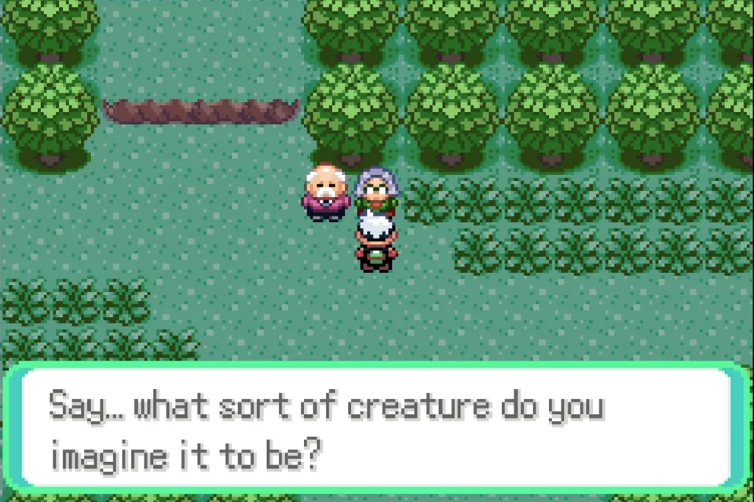
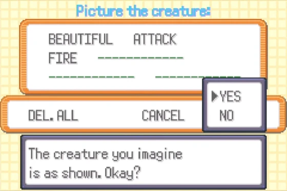
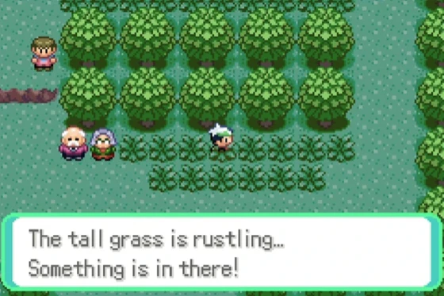
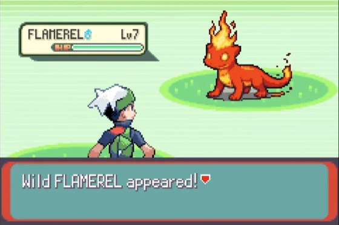
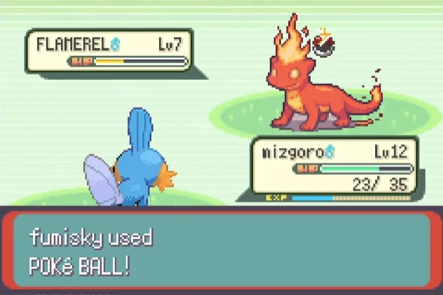
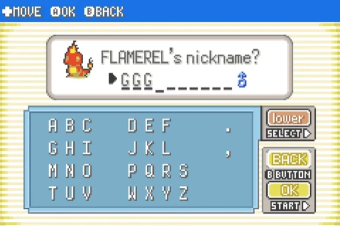
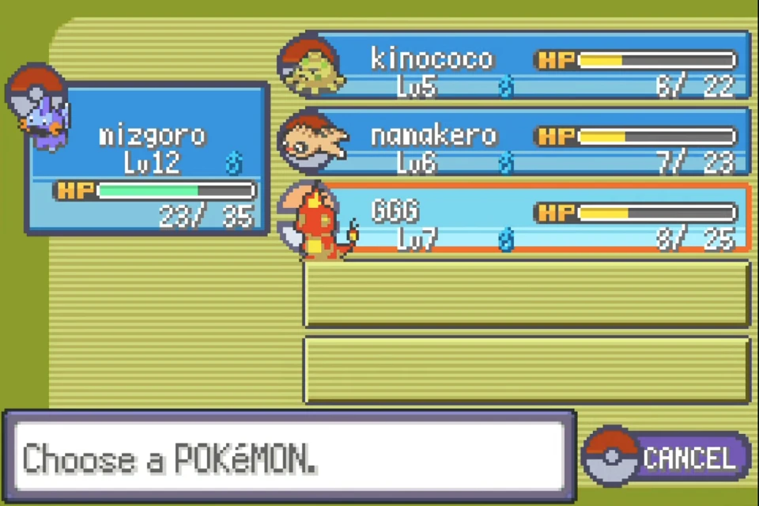
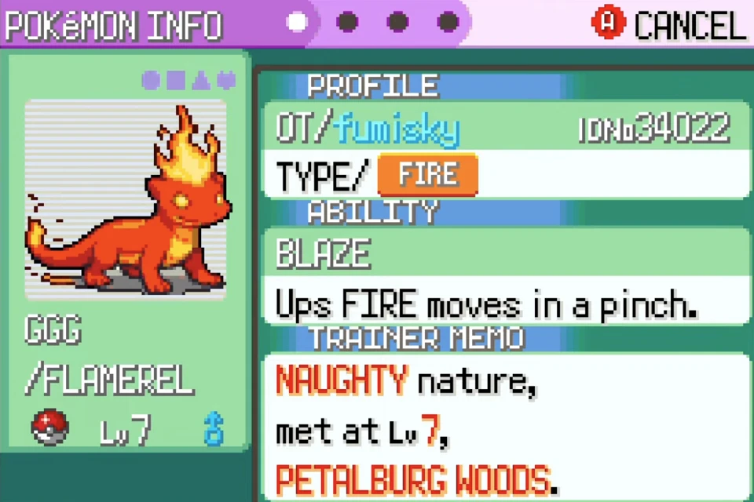
Designproblem – Wenn man frei erzeugt, wird das Spiel kaputt
Es ist eine andere Frage, ob eine KI einen neuen Charakter entwickeln kann und ob dieser Charakter im Spiel bestehen kann. Wenn seine Fähigkeiten zu hoch sind, wird der Schwierigkeitsgrad unausgewogen, und wenn Typ und Fähigkeiten nicht zusammenpassen, ist es schwer, ihn zu trainieren. Wenn das Aussehen zu kompliziert ist, kann man die Form nicht erkennen, wenn es in einen 64×64-Pixel-Sprite umgewandelt wird.
Andererseits, wenn man alles festlegt, hat es keinen Sinn, dass bei jeder Ausführung etwas anderes entsteht. Notwendig war nicht, der KI ihre Freiheit zu nehmen, sondern die Teile zu unterscheiden, die als Spiel beibehalten werden sollten, und die Teile, die Veränderungen zulassen.
Deshalb haben wir das Designziel von einem einzelnen Pokémon auf den Raum verlagert, in dem Pokémon erzeugt werden können. Menschen definieren Ziele, Einschränkungen, Verbote und Prüfmöglichkeiten, und die KI konkretisiert die Vorschläge innerhalb dieses Rahmens. Dies ist ein Versuch, das restriktive Design, das Meine Designphilosophie ist, als funktionierenden Prototyp umzusetzen.
Ansatz – nicht das Produkt erzeugen, sondern die Erzeugungsbedingungen gestalten
Dem LLM wird nicht erlaubt, freie Texte zu schreiben, sondern nur vorgegebene Felder wie Name, Typ, Basiswerte, Attacken, Körperbau und Farbe auszufüllen. Die Ausgabe wird nicht direkt übernommen, sondern von einem Validator überprüft. Bei Verstößen wird dem Modell zurückgemeldet, welche Regeln verletzt wurden, und die Generierung wird so lange wiederholt, bis die Bedingungen erfüllt sind.
- Der Mensch setzt die Grenzen. Spielbalance, in einer auf dem Bildschirm lesbaren Form und auszuschließende Ausdrücke werden zu überprüfbaren Regeln gemacht.
- Die KI konkretisiert die Kandidaten. Basierend auf den Worten des Spielers werden die Werte zulässiger Elemente vorgeschlagen.
- Die Maschine überprüft die Vorschriften. Zahlen, Kombinationen von Techniken und verbotene Ausdrücke werden automatisch bewertet.
- Nur Verstöße rückmelden. Kandidaten, die die Bedingungen nicht erfüllen, werden mit Begründung zurückgewiesen und neu erstellt.
Beschränkungen, die das Spiel schützen. Die Gesamtsumme der Statuswerte wurde auf einen Bereich von 280 bis 360 festgelegt, und für jede Fähigkeit wurden Ober- und Untergrenzen gesetzt. Die Techniken wurden aus der Spielquelle extrahiert und auf den Typ dieser Spezies oder den normalen Typ beschränkt. Außerdem wurden One-Hit-Kills, Selbstzerstörung, fester Schaden und übermäßig starke Techniken ausgeschlossen, und die Anzahl der Angriffstechniken sowie das Vorhandensein typgerechter Techniken wurden überprüft. Fangrate und Wachstumsgeschwindigkeit wurden fixiert, sodass die Unterschiede aufgrund der Erzeugung innerhalb eines vergleichbaren Bereichs bleiben.
Beschränkung zur Wahrung des Aussehens. Die Körperform wird aus Kandidaten ausgewählt, bei denen selbst kleine Sprites ihre Konturen leicht beibehalten können, und der Wortschatz für Farbe und Merkmale wird ebenfalls eingeschränkt. Menschliche Merkmale, Blut, Waffen und Schriftzeichen werden ausgeschlossen. Schließlich werden Bedingungen zur Verhinderung von Fehlern wie „nur eine Figur“, „ganzer Körper“ und „keine zusätzlichen Gliedmaßen erzeugen“ unbedingt in die Anweisungen zur Bildgenerierung aufgenommen.
In einem Bericht schlug das Modell zunächst einen Vorschlag mit einer Gesamtsumme der Rassenwerte von 380 vor. Der Rahmen erkannte Verstöße und forderte eine Neugenerierung, wodurch schließlich auf eine Spezifikation von 320 konvergiert wurde. Wichtig ist nicht, dass zufällig ein gutes Ergebnis erzielt wurde, sondern dass ein Prozess entworfen wurde, bei dem Ergebnisse außerhalb des Rahmens nicht übernommen werden.
Erfahrungen innerhalb des Spiels abschließen
Das, womit der Spieler in Berührung kommt, sind nur die Gespräche im Spiel, die Wortwahl und Begegnungen im Gras. Es ist nicht notwendig, einen anderen Bildschirm für die Generierung zu öffnen. Auf der anderen Seite übernimmt ein Python-Prozess auf dem PC die rechenaufwändigen Prozesse und arbeitet über Dateien mit dem Spiel zusammen. Durch die Lua-Skripte auf mGBA wird eine Brücke zwischen beiden geschlagen, wodurch das charakteristische Spielgefühl des bestehenden Spiels und die Verarbeitung durch die externe KI getrennt werden.
- Spezifikationen erstellen. Das lokale Sprachmodell wandelt sechs Wörter in geprüfte Rassendaten um.
- Eine Haltung einnehmen. Das Bildmodell zeichnet eine Referenzillustration und erzeugt davon ausgehend konsistent Front-, Rück- und Hand-Icons.
- In Spieldaten umwandeln. Das Bild auf 15 Farben reduzieren und in Sprites und Paletten konvertieren und komprimieren, die vom GBA verarbeitet werden können.
- Auf das laufende Spiel anwenden. Schreibe Daten in den reservierten Bereich und bringe neue Typen auf, ohne das Spiel neu zu starten.
Da dieselben Daten auch auf die Festplatte geschrieben werden, bleibt die reflektierte Rasse selbst dann erhalten, wenn das Spiel neu geladen wird. Die Erzeugung erfolgt nur einmal und kann nicht rückgängig gemacht werden. Wenn man einer Begegnung entkommt oder verliert, bleibt sie in der Welt, aber wenn man sie besiegt, erscheint sie nie wieder. Diese Irreversibilität ist ebenfalls so gestaltet, dass sie dem Erlebnis die Bedeutung von „nur ein Exemplar in der Welt“ vermittelt.
Was im Prototyp überprüft werden konnte
Dies ist eine Machbarkeitsprüfung, die alleine durchgeführt wurde, und kein fertiges Spiel oder ein Nutzerexperiment. Die erreichten Punkte und die nicht überprüften Bereiche werden wie folgt unterteilt.
- Der Bereich, in dem die Funktion überprüft wurde. Ich habe die Gespräche im Spiel, die Eingabe von sechs Wörtern, die Hintergrundgenerierung, die Umsetzung im laufenden Spiel, Begegnungen in der Wildnis, das Fangen und die Eingabe von Spitznamen nahtlos auf mGBA überprüft.
- Zu Vergleichszwecken implementiert. Es wurden zwei Zugänge eingerichtet: das „passive Erzeugen“ ohne Eingabe und das „aktive Erzeugen“, bei dem Wörter ausgewählt werden, sodass Gespräche, Begegnungen und Fänge aufgezeichnet werden können.
- Es gibt eine Grundlage, aber der durchgehende Bereich ist noch ungetestet. Das Aufleveln nach dem Fang, das Erlernen von Fähigkeiten, Kämpfe, das Speichern in Boxen und die weitere Nutzung nach dem Speichern sind mit dem bestehenden System verbunden, aber es wurden keine Tests über längere Spielzeiten durchgeführt.
- Nicht implementierter Bereich. Die Funktion, die Weiterentwicklungsziele vor Ort zu erzeugen, und das Experiment zum Vergleich der Bindung durch mehrere Teilnehmer wurden als zukünftige Aufgaben zurückgelassen.
Das Ergebnis meines eigenen Versuchs — nur weil es einzigartig ist, entsteht keine Bindung.
Soweit ich das Prototyp selbst gespielt habe, habe ich keine starke Bindung zu den generierten Pokémon entwickelt. Dies ist lediglich die persönliche Einschätzung der Implementierenden und kann nicht als verallgemeinerbares Experimentergebnis angesehen werden. Es lieferte jedoch einen Anhaltspunkt dafür, was als Nächstes geändert und verglichen werden sollte.
Es gibt zwei Bedingungen, die die Bindung zu beeinflussen scheinen.
- Die Qualität des Produkts. Wenn es nicht über ein Niveau hinausgeht, bei dem man sich von Aussehen und Einstellung angezogen fühlt, kann die Seltenheit, „das einzige Exemplar der Welt“ zu sein, die Zuneigung nicht aufrechterhalten.
- Tiefe des Engagements. Nur sechs Wörter zu wählen, ließ mich das Ergebnis eher als "überbracht bekommen" denn als "selbst geschaffen" empfinden. Man kann davon ausgehen, dass das Gefühl der Beteiligung nicht von der Menge der Eingaben, sondern von der Qualität des Produktionsprozesses erzeugt wird, wie zum Beispiel erneutes Auswählen, Vergleichen, Nachbessern und Verantwortung für das Ergebnis übernehmen.
Im Gegensatz dazu steht „Hanagitsune“, das nicht durch automatische Generierung für Spiele, sondern durch wiederholte Dialoge mit mehreren generativen AIs und manuelle Arbeit erstellt wurde. Ich habe eine Bindung zu diesem Charakter, da ich die Vorschläge verglichen, korrigiert und so lange bearbeitet habe, bis ich mit dem Ergebnis zufrieden war. Ich denke, das liegt sowohl an der ausreichenden Qualität als auch an dem Engagement, das inklusive Versuch und Irrtum erforderlich war.
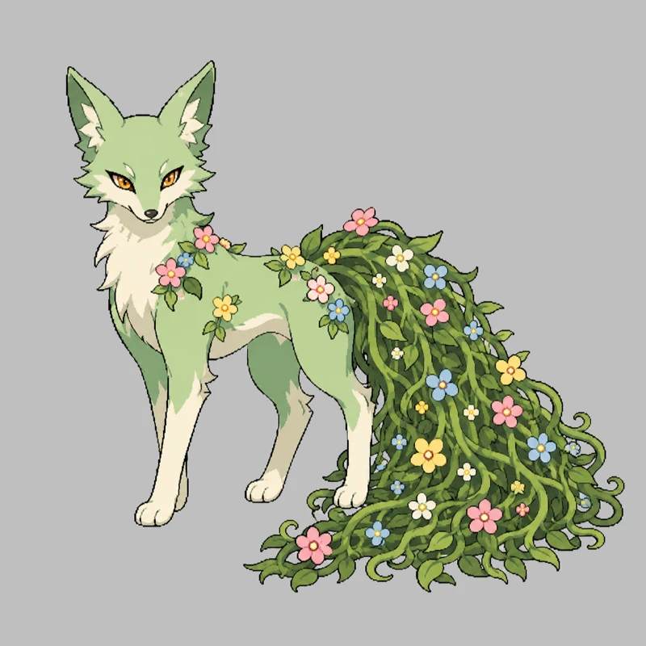
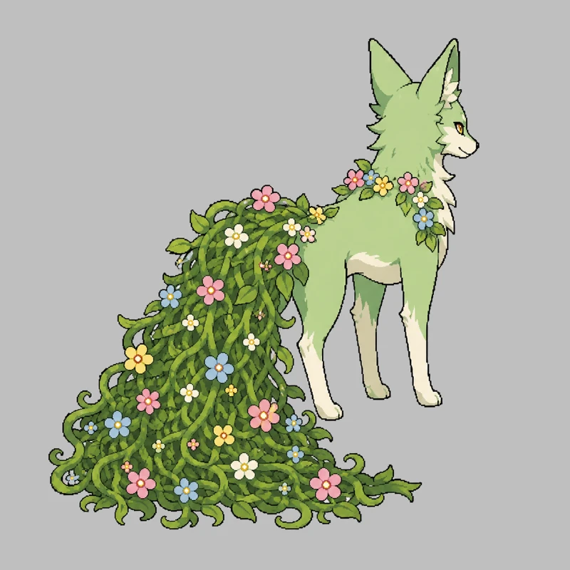
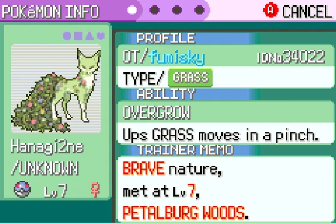
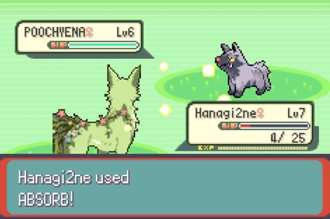
Dieser Prototyp beantwortet nicht die Frage, ‚Erzeugen Inhalte Zuneigung?‘. Die vage formulierte Frage wurde in zwei absichtlich veränderbare Elemente aufgeteilt: die Qualität des Erzeugnisses und die Tiefe des Engagements. In der nächsten Überprüfung ist es notwendig, Auswahl, Vergleich und Korrektur in den Herstellungsprozess einzubeziehen und die Qualität der Erzeugnisse auf einem bestimmten Niveau zu halten, bevor ein Vergleich durch mehrere Teilnehmer erfolgen kann.
Implementierung
Die Generierungspipeline, das Rahmenwerk für Einschränkungen und Validierungen, die Datenumwandlung für GBA sowie die Änderungen auf der Spieleseite werden in GitHub-Repository veröffentlicht.
pret/pokeemerald Basierend auf der Dekompilierung wurde dies als persönliche Forschung erstellt. Weder ROMs, ROM-Patches noch Spielinhalte werden verteilt. Alle hier gezeigten Sprites sind original von KI erzeugt. Pokémon ist eine eingetragene Marke von Nintendo, Creatures Inc. und Game Freak Inc., und dieses Projekt steht in keiner Verbindung zu diesen Unternehmen und wurde von ihnen nicht genehmigt.